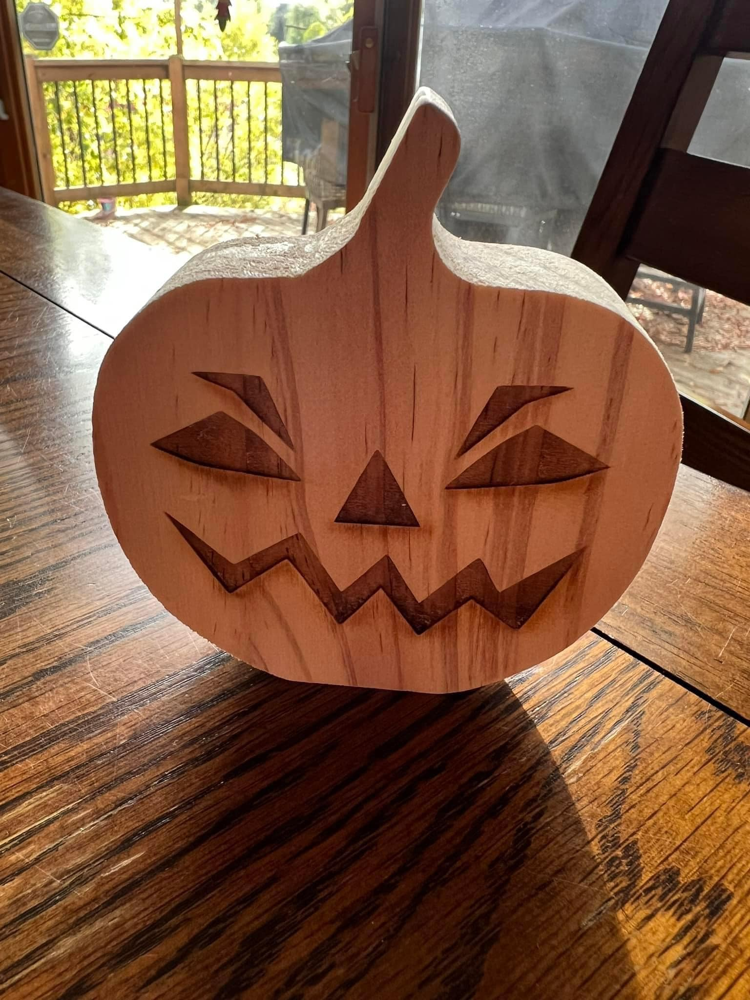

Hunt Information
🔍 Where to Look: Medallions are hidden somewhere on community property or in our yard... but it wouldn't be that easy, would it?
🏆 Claim Your Prize: Bring your found medallion to 4715 Narcissus Ln on Halloween for your prize! (We're the house with the tunnel)
What You're Looking For:
This is what the medallion looks like!
Daily Clues
Day 4 - October 27, 2025
Hope no one runs into any spooks or scares looking for the medallion!
It's funny how minor details can really change a situation. For instance, hearing kids playing and laughing might bring a smile to your face at 3pm. Maybe not so much at 3am 👻
Day 3 - October 26, 2025
Another great day for searching! Hopefully tomorrow the association will e-mail everyone in Wyndemere Farms about the hunt, but for those on here I guess the early bird gets the worm!
So you better fly off your perch and keep looking
Day 2 - October 25, 2025
Even if you don't find it, it's all about the fun of the hunt!
Get out and enjoy the crisp fall air, leaves changing color and falling, crunching underfoot. Good luck!
Day 1 - October 24, 2025
Last year some snow and rained interfered with the hunt and the medallion wasn't found. But the weather's looking good this year!
Check back tomorrow for more clues, until then hope you have fun poking around and searching high and low.